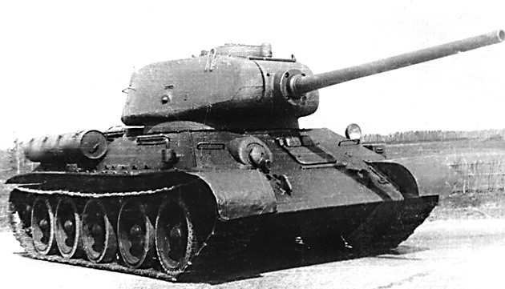
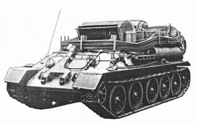
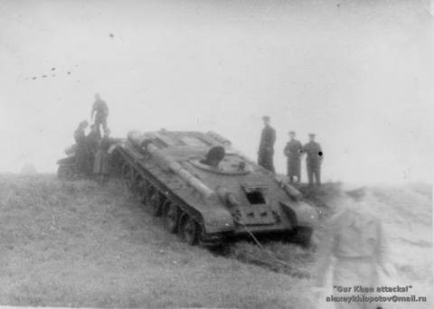
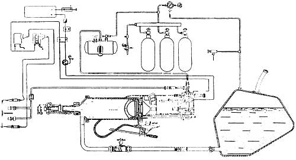
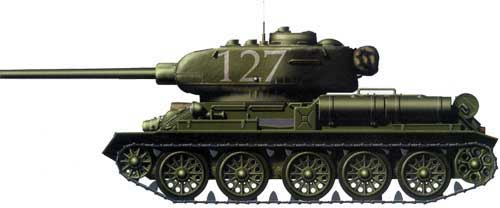
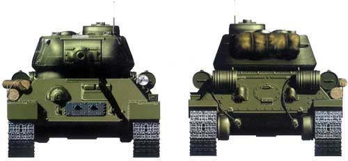

7,62-мм пулемета ДТМ
T-34-85 — войсковое обозначение последней модификации советского среднего танка Т-34 с орудием калибра 85-мм. Принят на вооружение РККА Постановлением ГКО № 5021 от 23 января 1944 года.
Спроектирован на базе серийного танка Т-34 образца 1942 года. Установка 85-мм пушки и конструктивные доработки значительно повысили боевую эффективность танка Т-34-85 по сравнению с Т-34-76.
Новая башня увеличенного объёма с усиленной броневой защитой конструктивно аналогична башне опытного танка Т-43. Повышена общая защищённость экипажа (5 человек), улучшены условия функционального взаимодействия членов экипажа. Показатели подвижности (быстроходность, манёвренность и проходимость) танка Т-34-85 вследствие увеличения его боевой массы снизились незначительно.
Весной-летом 1944 года прошли испытания стабилизатора 85-мм танковой пушки в вертикальной плоскости. Этот стабилизатор разработан специальным конструкторским бюро Наркомата судостроения под руководством А. Атовмьяна по теме «Таран». Особенностями его конструкции в том, что гироскоп, раскручиваемый трехфазным асинхронным двигателем, не располагался на орудии, но управлял цепями питания помпы гидравлического привода силовой части. Для питания гироскопа устанавлен преобразователь постоянного тока ГКЗ-Т на основе электродвигателя постоянного тока на 24 В и генератора трехфазной сети напряжением 60 В и частотой 275 Гц. Потребляемая мощность стабилизатора 550 Вт, время запуска — 4,5 мин. Первые испытания макетного образца состоялись в марте-апреле 1944 года в Кубинке.

С 1944 года Т-34-85 являлся основным танком РККА в Великой Отечественной войне.
При незначительно возросшей, благодаря башне, общей бронезащите, (по сравнению с танком Т-34-76), но недостаточной, в сравнении с тяжёлыми танками противника, танк Т-34-85 практически не утратил прежней подвижности и манёвренности — главного преимущества среднего танка в поединках с танками «Тигр» и «Пантера». Как боевая машина танк Т-34-85 явился классическим примером сочетания конструктивно-технологических решений, в своей совокупности обеспечивших наилучшее соответствие тактико-техническим требованиям, предъявляемым к «крейсерскому» танку на завершающем этапе Великой Отечественной (и Второй мировой) войны.
Т-34-85 производился в СССР с января 1944 года по 1950 год — до начала массового производства Т-54. По лицензии СССР 3185 танков этого типа произведено в Чехословакии в 1952—1958 годах и 1980 танков — в Польше в 1953—1955 годах.
Всего танков Т-34-85 (с учётом произведённых в ЧССР и ПНР) выпущено почти 30,5 тысячи, а с учётом ранее выпущенных Т-34-76 общий выпуск составил чуть более 65,8 тысяч. Это позволяет утверждать, что танк Т-34 является самым массовым танком в мире.
После войны Т-34-85 составил основу танковых войск Советской армии вплоть до середины 1950-х годов, до массового поступления в танковые войска Советской Армии новейших средних танков Т-54. Официально Т-34-85 снят с вооружения Вооруженных Сил Российской Федерации в 1993 году.
После войны Т-34-85 в значительных количествах поставлялись в государства Европы и Азии, где использовались в вооружённых конфликтах, включая Корейскую и Шестидневную войны и ряд других. По состоянию на 2007 год, Т-34-85 ещё стоял на вооружении ряда стран.

На базе танка Т-34 был создан бронированный танковый тягач, выпускавшийся в различных модификациях. Опытный образец тягача был выпущен в 1941 г.
Позднее серийно выпускались тягачи Т-34-Т, предназначавшиеся для буксировки легких и средних танков, а затем - Т-34-Т с лебедкой и Т-34-ТО с комплектом такелажного оборудования, обеспечивавшие кроме буксировки еще и вытаскивание застрявшей бронетехники.
В Чехословакии на базе танка Т-34 был создан танковый тягач CW-34. Тягач массой 31 т был оборудован лебедкой тяговой силой 30 т, имел комплект ОПВТ и вооружался 7,62-мм пулеметом ДТМ. Позднее с использованием чехословацкой документации CW-34 выпускался также и в Польше.
Польскими специалистами на базе Т-34-85 был разработан бронированный тягач CZ/T-34/Panc. для вытаскивания застрявших танков и проведения демонтажно-монтажных работ на поврежденной бронетехнике.

В начале 60-х годов в Польше был создан ремонтно-эвакуационный тягач WPT-34, первые партии которого изготовлялись на базе СУ-85 и СУ-100, а более поздние - на базе Т-34-85. тягач массой 31т был оборудован ОПВТ, краном-стрелой грузоподъемностью 1000 кг и платформой грузоподъемностью 2400 кг. Вооружение составляли 2 пулемета - 12,7-мм ДШК и 7,62-мм ДТМ, экипаж 5 человек.
Средний танковый тягач Т-34-Т выпуска 1947 г. был разработан после окончания Великой Отечественной войны и являлся дальнейшим развитием танкового тягача Т-34-Т выпуска 1944 г. Тягач предназначался для эвакуации различных образцов бронетанкового вооружения и использовался в качестве подвижного пункта технического наблюдения. Созданный на базе среднего танка Т-34 (Т-34-85) тягач был принят на вооружение Советской Армии в 1947 г. Выпуск тягача был организован на танкоремонтных заводах Министерства Вооруженных Сил.
Корпус тягача имел три отделения: управления, моторное и трансмиссионное. В отделении управления находились рабочие места командира, механика-водителя и сцепщика, установлены приводы управления тягачом, 7,62-мм пулемет ДТМ с пятью пулеметными дисками, радиостанция и часть комплекта ЗИП. Тягач отличался от базовой машины отсутствием башни. Отверстие в крыше корпуса танка (под установку башни) закрывалось приваренным броневым листом, в котором располагались командирская башенка и люк сцепщика. Командирская башенка и крышка люка сцепщика использовались от непригодных к ремонту башен танка Т-34-85. Для эвакуации поврежденных (неисправных) боевых машин по бортам тягача укладывались буксирные тросы. На крыше укладывались блоки полиспастов и при необходимости запасные части, использовавшиеся при текущем ремонте. При буксировании среднего танка, как правило, использовался один тягач, а для буксирования тяжелого танка обычно использовались два тягача. Средняя скорость при буксировании составляла 3 км/ч. Для тушения пожара в комплекте тягача имелось два переносных углекислотных огнетушителя ОУ-2.
Средний танковый тягач Т-34-Т выпуска 1957 г. был разработан в Нижнем Тагиле КБ Уралвагонзавода в 1956 г. в целях дальнейшего совершенствования танкового тягача Т-34-Т. Созданный на базе среднего танка Т-34 (Т-34-85) тягач был принят на вооружение Советской Армии в 1957 г. Выпуск тягача был организован на танкоремонтных заводах министерства обороны.
На тягаче Т-34-Т выпуска 1957 г. была установлена радиостанция, размещены комплект такелажного оборудования для вытаскивания застрявших танков, грузовая платформа, кран-стрела и комплект вспомогательных приспособлений для проведения ремонтных работ. Экипаж тягача состоял из двух человек.
Средний танковый тягач Т-34-Т выпуска 1958 г., был разработан конструкторским отделом Центрального экспериментального завода ЦЭЗ № 1 в целях дальнейшего совершенствования тягача Т-34-Т. Опытный образец был изготовлен на заводе ЦЭЗ № 1 в 1957 г. и после успешно пройденных испытаний на НИИБТ полигоне в 1958 г. приказом министра обороны СССР он был принят на вооружение Советской Армии. В том же году его производство было организовано на танкоремонтных заводах Министерства обороны. Тягач предназначался для эвакуации танков и САУ с поля боя, вытаскивания застрявших боевых машин всех типов при легком или среднем застревании и оказания помощи экипажам в восстановлении ходовой части и устранении мелких неисправностей.
1 х 7,62-мм пулемета ДТМ
огнемет АТО-42
20 огневыстрелов
1827 патронов

В начале 1944 года все заводы, выпускавшие танки Т-34, перешли на выпуск новой модификации - Т-34-85. При этом стало под вопрос производство огнеметных танков ОТ-34, выпускавшихся на базе Т-34 и остро необходимых фронту в связи с переходом Красной Армии к наступательным действиям во второй половине Великой Отечественной войны. Проблема была решена принятием в мае 1944 года новой модификации танка Т-34-85 - огнеметного танка ОТ-34-85. Как и в варианте огнеметного танка на базе Т-34, автоматический пороховой огнемет АТО-42 устанавливался в лобовом листе корпуса танка вместо курсового пулемета. Углы наведения огнемета в вертикальной плоскости - от -2 до +10°, в горизонтальной - ±15°. В новом танке удалось разместить вдвое больший запас огнесмеси, чем в ОТ-34 (200 литров вместо 100) при сохранении основных боевых характеристик базового танка.

Важной чертой ОТ-34 и ОТ-34-85 было их практически полное внешнее сходство с линейными боевыми танками и сохранение обычных боевых свойств, а также наличие средств связи. Как и линейные танки, огнеметные для постановки завесы снабжались дымовыми шашками. К недостаткам относились отсутствие кругового огнеметания, малый сектор обстрела по вертикали и ограниченная возможность веления прицельного огня из огнемета. По сути, это были линейные танки с дополнительным огнеметным вооружением.

За 1944 г. было построено 30 танков ОТ-34-85, за 1945 г. - 301, т.е. огнеметные танки составили около 1,4% от общего выпуска Т-34-85 за время войны. Огнеметный танк производился промышленностью до конца войны, всего была выпущена 331 машина. ОТ-34-85 состояли на вооружении Советской Армии до конца 1950-х гг., когда были заменены ОТ-54 и ОТ-55 с установкой огнеметов в башне вместо спаренных пулеметов.
В состав танковой колонны "Димитрий Донской", построенной на средства, собранные Русской православной церковью, входили танки ОТ-34, которыми вооружили 516-й отдельный огнеметно-танковый полк. Он впервые вступил в бой 16 июня 1944 г. в Белоруссии совместно со 2-й штурмовой инженерно-саперной бригадой 1-го Белорусского фронта. 24 - 27 июня полк участвовал в Бобруйской наступательной операции. Подразделения огнеметных танков в основном действовали со штурмовыми батальонами. Далее полк участвовал в Люблин-Брестской операции и его танкисты первыми ворвались в Брест и вскоре вышли на государственную границу. В августе 1944 г. он вступил на территорию Польши. После интенсивных боев к 10 октября в составе полка осталось только два танка, их отправили в капитальный ремонт. Полк перевооружили новой техникой. За отличные боевые действия приказом Верховного Главнокомандующего от 19 февраля 1945 г. ему было присвоено почетное наименование "Лодзинский". Потом танкисты штурмовали крепость Познань, выжигали огнем пулеметные и орудийные гнезда на Зееловских высотах, закончили войну в Берлине. Всего танкисты полка уничтожили свыше 3800 солдат и офицеров противника, 48 танков и штурмовых орудий, 130 орудий и минометов, 400 пулеметных точек, 47 дзотов.

В ходе наступления огнеметные танки располагались в боевом порядке обычно за линейными танками, а при подходе к объектам атаки (укреплениям, домам и т.п.) выдвигались вперед и уничтожали огнеметанием назначенные цели, выжигали живую силу из сооружений. При атаке сильно укрепленных огневых точек требовался сосредоточенный огонь, причем иногда первый выстрел делали без поджигания струи, зажигая огнесмесь вторым выстрелом - так обеспечивалось более надежное поражение и меньше смеси сгорало в полете.

В боях на улицах городов и при прорыве укрепленных районов танковые огнеметы часто оказывались эффективнее танковых пулеметов, которые не могли достать гранатометчиков, стрелков и "фаустников" противника в укрытиях. Танки применяли свои огнеметы против огневых точек на нижних этажах и в подвалах, дотов и дзотов, а также действовали как линейные - вели огонь из пушек, перекрывали корпусом пулеметные амбразуры противника. Для уменьшения потерь среди экипажей огнеметных танков были разработаны специальные огнестойкие костюмы. Но, хотя испытания этих костюмов признали успешными, сведений об их применении в боевых частях найти не удалось.